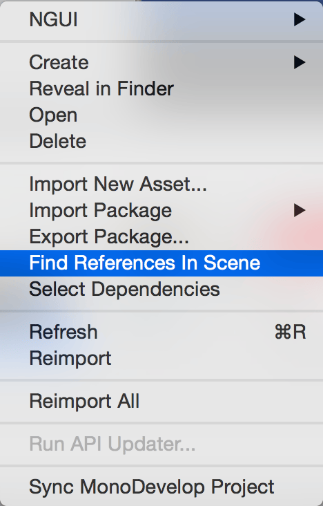
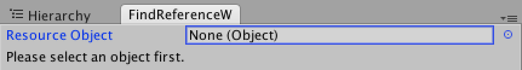
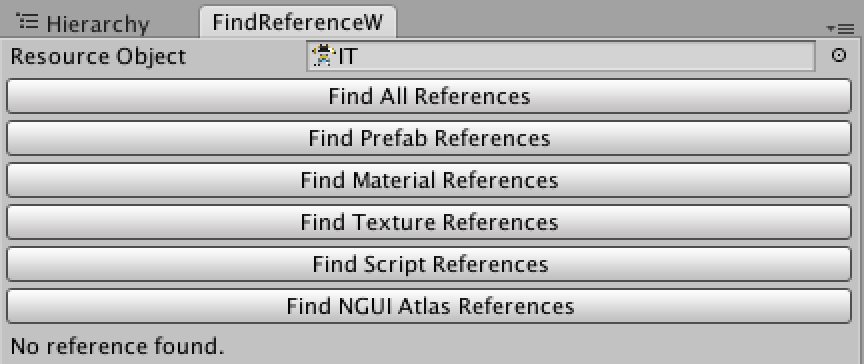
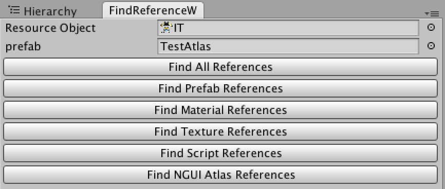

PS:
此工具中有使用到 NGUI Plugin
若專案中沒有使用 NGUI Plugin，請自行移除相關腳本
有時候我們會需要查詢哪些資源有被什麼佔用
而在 Unity 中雖然有 Find References In Scene 這個功能

但這個功能只能搜尋場景中的相依資源
在這次的專案中為了能夠方便搜尋
需要搜尋整個專案中的資源
所以寫了這個小工具來使用
腳本如下
using UnityEngine;
using UnityEditor;
using System.Collections.Generic;
public class FindReferenceWindow : EditorWindow
{
private Object m_resource;
private Dictionary<string, List<Object>> m_referencePath;
private string m_log;
private Vector2 m_scrollPosition;
[MenuItem ("TEDTool/Find Reference Window")]
private static void Init ()
{
FindReferenceWindow window = (FindReferenceWindow)EditorWindow.GetWindow (typeof (FindReferenceWindow));
window.Show();
}
void OnGUI ()
{
GUILayout.BeginVertical ();
m_scrollPosition = GUILayout.BeginScrollView(m_scrollPosition);
m_resource = EditorGUILayout.ObjectField("Resource Object", m_resource,typeof(Object), false);
DisplayReferences ();
if (m_resource != null)
{
if(m_referencePath == null || m_referencePath.Count == 0)
{
m_log = "No reference found.";
}
DisplayButtons();
}
else
{
m_log = "Please select an object first.";
}
if(!string.IsNullOrEmpty(m_log))
GUILayout.Label(m_log);
GUILayout.EndScrollView();
EditorGUILayout.EndVertical ();
}
private void DisplayReferences()
{
if(m_referencePath != null && m_referencePath.Count != 0)
{
m_log = "";
foreach(KeyValuePair<string, List<Object>> pair in m_referencePath)
{
for(int cnt = 0; cnt < pair.Value.Count; cnt++)
{
EditorGUILayout.ObjectField(pair.Key, pair.Value[cnt], typeof(Object),false);
}
}
}
}
private void DisplayButtons()
{
if (GUILayout.Button("Find All References"))
FindReference(m_resource);
if (GUILayout.Button("Find Prefab References"))
FindReference(m_resource, new string[] {"prefab"});
if (GUILayout.Button("Find Material References"))
FindReference(m_resource, new string[] {"mat"});
if (GUILayout.Button("Find Texture References"))
FindReference(m_resource, new string[] {"png", "jpg"});
if (GUILayout.Button("Find Script References"))
FindReference(m_resource, new string[] {"cs"});
if (GUILayout.Button("Find NGUI Atlas References"))
FindReference(m_resource, new string[] {"prefab"}, true);
}
private void FindReference(Object resource, string[] formats = null, bool isAtlas =false)
{
InitDictionary ();
string resourcePath = AssetDatabase.GetAssetPath (resource);
List<string> referenceList = new List<string> ();
List<string> removeList = new List<string>();
string[] allAssets = AssetDatabase.GetAllAssetPaths ();
if(allAssets.Length == 0)
{
m_log = "No asset reference in this project.";
return;
}
for(int cnt = 0; cnt < allAssets.Length; cnt++)
{
referenceList.Add(allAssets[cnt]);
}
removeList = GetRemoveList (referenceList, formats);
if(removeList.Count != 0)
{
for(int cnt = 0; cnt < removeList.Count; cnt++)
{
referenceList.Remove(removeList[cnt]);
}
}
if(!isAtlas)
FindNormalReference(resourcePath, referenceList);
else
FindAtlasReference(resource.name, referenceList);
}
private void InitDictionary()
{
m_referencePath = new Dictionary<string, List<Object>> ();
}
private List<string> GetRemoveList(List<string> referenceList, string[] formats)
{
List<string> removeList = new List<string> ();
if(formats != null && formats.Length != 0)
{
for(int cnt = 0; cnt < referenceList.Count; cnt++)
{
if(!IsCorrectFormat(referenceList[cnt], formats))
{
removeList.Add(referenceList[cnt]);
}
}
}
return removeList;
}
private bool IsCorrectFormat(string path, string[] formats)
{
bool isCorrect = false;
for(int i = 0; i < formats.Length; i++)
{
if(GetObjectFormat(path) == formats[i])
{
isCorrect = true;
break;
}
}
return isCorrect;
}
private void FindNormalReference(string resourcePath, List<string> referenceList)
{
for(int cnt = 0; cnt < referenceList.Count; cnt++)
{
string[] dependencies = AssetDatabase.GetDependencies(new string[] {referenceList[cnt]});
if(dependencies.Length == 0)
{
continue;
}
for(int count = 0; count < dependencies.Length; count++)
{
if(dependencies[count] == resourcePath)
{
string format = GetObjectFormat(referenceList[cnt]);
if(!m_referencePath.ContainsKey(format))
m_referencePath.Add(format, new List<Object>());
m_referencePath[format].Add(AssetDatabase.LoadAssetAtPath(referenceList[cnt],typeof(Object)));
}
}
}
}
private void FindAtlasReference(string resourceName, List<string> referenceList)
{
for(int cnt = 0; cnt < referenceList.Count; cnt++)
{
Object asset = AssetDatabase.LoadAssetAtPath(referenceList[cnt],typeof(Object));
GameObject assetObject = null;
if(asset is GameObject)
{
assetObject = (GameObject)asset;
}
if(assetObject == null)
continue;
UIAtlas uiAtlas = assetObject.GetComponent<UIAtlas>();
if(uiAtlas == null)
continue;
for(int aCnt = 0; aCnt < uiAtlas.spriteList.Count; aCnt++)
{
if(uiAtlas.spriteList[aCnt].name == resourceName)
{
string format = GetObjectFormat(referenceList[cnt]);
if(!m_referencePath.ContainsKey(format))
m_referencePath.Add(format, new List<Object>());
m_referencePath[format].Add(AssetDatabase.LoadAssetAtPath(referenceList[cnt],typeof(Object)));
}
}
}
}
private string GetObjectFormat(string path)
{
char[] chars = new char[] {'.'};
string[] splits = path.Split(chars, System.StringSplitOptions.RemoveEmptyEntries);
return splits[splits.Length - 1];
}
}使用方法
1.點選 TEDTool/Find Reference Window
2.開啟頁面

3.拖拉想要查詢的資源到 Resource Object

目前的功能有
Find All References：搜尋所有相關資源
Find Prefab References：搜尋相關 Prefab 資源 (.prefab)
Find Material References：搜尋相關 Material 資源 (.mat)
Find Texture References：搜尋相關 Texture 資源 (.png、.jpg)
Find Script References：搜尋相關 Script 資源 (.cs)
Find NGUI Atlas References：搜尋相關 NGUI Atlas 資源 (.prefab)
這裡我使用的功能是搜尋該圖片在 NGUI 中的相關圖集資源
4.點選 Find NGUI Atlas References
